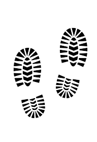

Torna indietro
La Sacra di San Michele
Località: Sant'Ambrogio di Torino
.webp)
.webp)
.webp)
.webp)
Informazioni tecniche sul percorso
|  8,5 km |
 |
 |
|
|---|
LA STORIA - L’abbazia a picco sul cielo
La Sacra di San Michele (nota anche come Sagra di San Michele nel linguaggio popolare locale) è un monumento simbolo del Piemonte. Si tratta di un complesso architettonico religioso avvolto nel mistero, la cui sagoma si erge dominante, sfidando quasi le leggi della fisica, sulla cima del monte Pirchiriano (a 962 m di altitudine), al confine tra le Alpi Cozie e la Pianura Padana. Costruita alla fine del X secolo, l’abbazia si trova in bassa Val di Susa, nel comune di Sant’Ambrogio di Torino (a 40 km dalla città della Mole) e rappresenta un ottimo punto panoramico da cui si può ammirare la bellezza mozzafiato della Val di Susa. Costituisce un luogo meraviglioso e denso di spiritualità, custodito in origine dai monaci benedettini e che, dal 1837, venne affidato ai padri Rosminiani. La storia, il valore spirituale e il paesaggio che la circonda hanno ispirato lo scrittore Umberto Eco per il best-seller “Il nome della Rosa” e rendono la Sacra una meta di richiamo per visitatori da tutta Europa.
Itinerario per raggiungere la Sacra di San Michele
Come arrivare all'abbazia
Partendo da Torino è possibile raggiungere la Sacra di San Michele in diversi modi:
- AUTO
- TRENO
- BUS
- A PIEDI
I Quattro Percorsi
Il modo più autentico per raggiungere la Sacra è quello di percorrerla a piedi come facevano una volta gli antichi pellegrini. Ci sono quattro itinerari che differiscono per durata, distanza e per scopo.
- Percorso 502: chiamato Via Crucis per la presenza di 15 croci durante il percorso. Parte da Sant’Ambrogio, dalla Chiesa di San Giovanni Vincenzo, da qui la vostra meta disterà solo 3 Km.
- Percorso 503: detto anche Antica Mulattiera in quanto era appositamente adibito al passaggio delle carovane di muli o altre bestie da soma. Parte dalla Chiesa di San Pietro Apostolo situata nel comune di Chiusa San Michele. La vostra meta sarà raggiungibile dopo 3 Km.
- Percorso 562: è il percorso più lungo e consta di 7,6 km e collega il comune di Vaie alla Borgata Folatone, per poi proseguire il suo corso sul Sentiero dei Franchi. Si tratta del percorso più lungo in quanto attraversa 4 piccole borgate di montagna. Il punto di partenza è la Località Picapera, Vaie.
- Sentiero dei principi: è il sentiero più panoramico, diversamente dagli altri, e dista 3,3 km da Mortera.
Il Sentiero dei Principi (Stra dij Prinsi)
È possibile parcheggiare l’auto nella Frazione di Bertassi; da lì, tramite un cammino boschivo (a cui è stata erroneamente estesa la definizione di strada dei principi) della lunghezza di 1 km, si raggiunge Mortera, luogo dal quale inizia il cammino verso la Sacra, attraversando il sentiero dei principi. Dopo pochi minuti dall’inizio del sentiero, possiamo godere della vista dei laghi di Avigliana e delle meravigliose vette alpine innevate. Di seguito, percorrendo lateralmente la montagna, troviamo tavoli per picnic e panchine da cui si può già ammirare in lontananza la Sagra di San Michele e dove è possibile fare uno spuntino, rilassarsi e, per gli amanti della lettura, sfogliare un libro completamente immersi nella natura. Percorrendo la mulattiera si arriva nel piazzale Croce Nera, dove ci si imbatte in venditori ambulanti con bancarelle e si viene raggiunti dall’inebriante odore dei prodotti tipici del luogo (salumi, formaggi, miele ecc.) e dove si trova un bar/ristorante fornito di dehor per godersi appieno le giornate migliori sorseggiando una bevanda rigenerante all’aperto e tavoli all’interno adibiti esclusivamente al servizio ristorazione. Dal piazzale Croce Nera proseguendo poi a piedi per 10 minuti, su una strada asfaltata e poi a ciottoli ci si ritrova davanti alla monumentale abbazia. Al suo interno, è presente una biglietteria per poter accedere al complesso.
Curiosità
È chiamato Sentiero dei principi per il corteo tenutosi nell’ottobre del 1836, in cui furono trasportate 27 salme dei nobili principi della famiglia dei Savoia, dal Duomo di Torino fino alla Sacra.
“È la notte del 25 ottobre 1836: un singolare corteo percorre la strada da Giaveno, attraverso Borgata Sala, porta alla Mortera. Soldati, nobili, religiosi, inservienti di corte, semplici contadini portano e scortano 27 salme di defunti della famiglia Savoia. Il corteo funebre è diretto alla Sacra di San Michele.
È stato il re Carlo Alberto a volere l’inconsueta processione, per dare degna e definitiva sepoltura ai suoi avi, dimenticati sino ad allora nei sotterranei del Duomo di Torino. Da allora le salme riposano nella Chiesa della Sacra, custodite, in seguito ai lavori di restauro effettuati ai primi del Novecento, in monumentali sarcofagi di pietra verdi.
Da quel giorno il sentiero che dalla Frazione Mortera porta alla Sacra di San Michele prese il nome di “Strada dei Principi.”